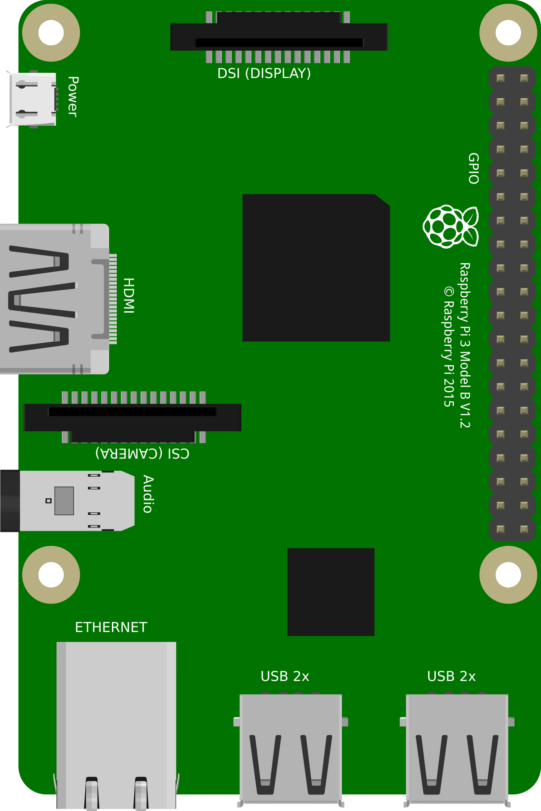

Hardware and Code
Key Goals
Options
Rasbery Pi(Family)
Here’s what a Raspberry Pi 2 and a Sense HAT look like:
With these, you can do cool things like program your own version of Connect-4 – you will need to consider how to check for a win by evaluating options as shown in the diagram below: